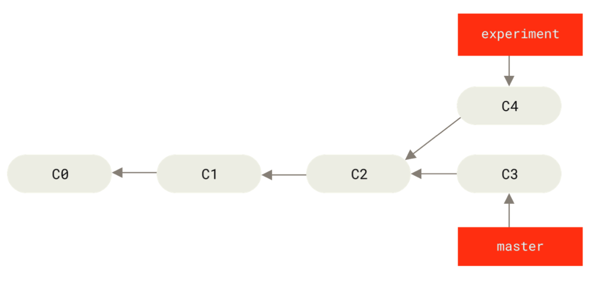

VCS发展阶段
本地版本控制系统(LVCS)
通过数据库保存所有文件变更 典型的代表是 RCS

中心化版本控制系统(CVCS)
解决多人同时合作编辑的问题
架构: 单一服务器, 存储所有版本化的文件。复数的客户端从服务器check out文件进行处理, check out出来的是最新版本的一个快照

最关键的缺陷是单点问题，如果服务器宕机，所有开发者没法保存变更。 服务器的数据出问题(比如硬盘问题或者数据库问题)，整个项目就没法恢复
分布式版本控制系统(DVCS)
客户端会全量拉取服务端的文件及历史数据
优势在于如果服务器挂掉，所有的客户端可以作为后备，并且每一个开发者可以建立自己的工作流
Linux内核代码在2002维护在BitKeeper 2005年BitKeeper不再支持Linux内核开发者，Linux的创始人Linus Torvalds决定自己写一个版本控制工具，就诞生了git
git最初的目标是 1. 快速 2. 设计简单 3. 支持非线性开发，例如数千个并行的分支 4. 分布式 5. 可以处理例如Linux内核的大型项目
git系统重要的几个概念
多版本文件存储
其他的VCS增量存储文件变更 git则是快照存储
git绝大多数操作都是本地进行的，不需要联网 git的运行过程通常是增量的
三种状态
- Working Directory
- Staging Area
- Repsitory
git基础
.git文件夹存储了骨架信息 git clone会把所有的文件，版本变更全部拉取到本地，而不是仅仅拉取最新版本的快照
新建的文件如果不使用git add，git不会会追踪这些文件
git add的作用 - 追踪新文件 - 把修改放到缓存区 - 标记产生冲突的文件已经解决
$ git status -s
M README
MM Rakefile
A lib/git.rb
M lib/simplegit.rb
?? LICENSE.txt
每个文件开头有两个字符，左边表示存储在缓存区的状态，右边表示存储在工作区的状态
??表示未被git追踪的文件，M表示有修改，A表示新增
记录一些回退命令
# 可以用来修改最后一次commit的内容
git commit --amend
# 将缓存区的文件回退到工作区
git reset HEAD <file>
git restore --staged <file>
# 将工作区文件回退到上一次commit的状态, 注意这是一个危险操作
# git 控制的修改如果commit过就有可能恢复，否则是无法通过git恢复的
git checkout -- <file>
git restore <file>
fetch & pull
fetch只是把远程的数据下载到本地的仓库，并不会主动合并到已有的分支，也不会改变当前的工作状态
pull会拉取远程的分支并且合并到现有的分支
tag
git的tag通常是用于记录发布信息的，tag分为两种 Annotated Tags， Lightweight Tags
tag同样需要使用push命令推送到远端仓库
分支相关
git的分支和commit操作息息相关 每一次commit之后会生成一个commit对象
commit对象包括的字段有 - 目录结构树的校验和 - 父节点校验和(初始化没有父节点，普通的commit有一个父节点，merge可能会导致多个父节点) - 作者信息 - commit输入信息
初始化的commit对象
经过两次commit
git的branch实际上只是一个文件，文件记录了长度为40的字符串，指向一个commit对象，因此生成一个新的分支代价非常低
merge和rebase的区别
初始状态 
merge的效果
git checkout master
git merge experitment
本质上是三方的合并
rebase的效果
git checkout experiment
git rebase master
步骤如下： 1. 找到两个分支共同的祖先C2 2. 将experiment分支到C2所有的commit暂存 3. 将experiment分支的指针指向master分支 4. 将步骤2暂存的结果重放
千万不要对远程的公共分支进行rebase
其他工具
reset
git的缓存区和HEAD都存储在.git目录，但是工作区就在实际的文件中
- 改变HEAD的分支的指向, --soft选项
- 改变暂存区, --mixed选项, 并且默认
- 改变工作区, --hard选项, 危险操作
git reset --soft HEAD^
git reset --mixed HEAD^
git reset --hard HEAD^
reset除了指定HEAD, 还可以指定路径
git reset file.txt
 效果就是将缓存区的文件还原
效果就是将缓存区的文件还原
如果想还原到指定的历史，还可以增加参数
git reset eb43 file.txt
checkout
checkout与reset十分类似，但是reset改变的是HEAD指向的分支，checkout改变的HEAD本身 checkout就类似reset --hard，但是如果工作区存在变更，reset --hard是直接覆盖，而checkout更加智能，会进行合并
如果checkout后面接了文件路径，效果就和reset --hard相同了，完全覆盖
git reset [branch] file
git checkout [branch] file
思考题: 如果现在想删除一个java文件，但是以后可能恢复这个文件，如何使用git处理？ 解法是找到文件删除的那次commit hash，然后使用
git checkout <hash>~1 -- <filename>
reset和checkout的总结可以参考以下的表格
撤销合并
场景如下:
误执行了git merge topic，需要撤销merge
方案一: reset
将master强制拉回到C6，git reset --hard HEAD~
方案二: revert
git revert -m 1 HEAD
效果是将master看作主分支，将C6作为一个版本，将C4在master的祖先C2作为一个版本进行合并
这个方案的问题在于，如果之后还是需要合并topic，会丢代码
^M和C7的共同祖先是C4，M,^M和C7执行之后，C3，C4的代码就丢失了
解决上述问题方法是再执行revert，将^M变为M(其实真实情况已经是^^M)，保留已经合并的C3, C4
git revert ^M
git merge topic
note: 其实revert执行之后也相当于一次commit操作,并不是类似reset的回退
Git内部原理
Git对象
重点文件路径.git/objects
Git 本质是一个内容寻址文件系统, 即key-value数据存储
如果存储的是内容文件, 会使用 头部信息 + 内容 计算40位的SHA-1哈希值
头部信息计算方式 对象类型 + 空格 + 内容长度 + 空字节(\0)
在写入磁盘时会使用zlib压缩
校验和的前两位是目录, 余下38位作为文件名, 类似如下效果
find .git/objects -type f
.git/objects/3c/4e9cd789d88d8d89c1073707c3585e41b0e614
.git/objects/0b/0813b3b37150a1cce8dd860aa8b9b0a0675ff3
.git/objects/b2/f691d79137a3359cf65760b2cafda2910532ec
.git/objects/d6/70460b4b4aece5915caf5c68d12f560a9fe3e4
.git/objects/d8/329fc1cc938780ffdd9f94e0d364e0ea74f579
.git/objects/e3/aa5e3c16816f62260c9fa81e8825c6f4ec9869
.git/objects/1f/7a7a472abf3dd9643fd615f6da379c4acb3e3a
.git/objects/01/55eb4229851634a0f03eb265b69f5a2d56f341
.git/objects/fa/49b077972391ad58037050f2a75f74e3671e92
.git/objects/83/baae61804e65cc73a7201a7252750c76066a30
Git对象类型有 - blob object 数据对象 保存文件内容 - tree object 树对象 保存文件名, 组织文件 - commit object 提交对象 用于记录提交 - tag object 标签对象 类似一个提交对象，通常指向一个提交对象，可以看作永不移动的分支引用
以下是一个tree object的示例
100644 blob a906cb2a4a904a152e80877d4088654daad0c859 README
100644 blob 8f94139338f9404f26296befa88755fc2598c289 Rakefile
040000 tree 99f1a6d12cb4b6f19c8655fca46c3ecf317074e0 lib
4列分别是文件模式, 文件类型, SHA-1(相当于文件指针) 文件名或目录名 其中文件模式一般分为 - 100644 普通文件 - 100755 可执行文件 - 120000 符号链接
commit object示例
tree d8329fc1cc938780ffdd9f94e0d364e0ea74f579
author hester <hesternanweiguo@gmail.com> 1615013263 +0800
committer hester <hesternanweiguo@gmail.com> 1615013263 +0800
first commit
相关的底层命令
#内容写入
echo 'test content' | git hash-object -w --stdin
# 返回40位hash d670460b4b4aece5915caf5c68d12f560a9fe3e4
#内容读取
git cat-file -p d670460b4b4aece5915caf5c68d12f560a9fe3e4
# test content
#获取指定对象的类型
git cat-file -t d670460b4b4aece5915caf5c68d12f560a9fe3e4
# blob
# 新增文件到暂存区
git update-index --add --cacheinfo 100644 \
83baae61804e65cc73a7201a7252750c76066a30 test.txt
# 暂存区内容写到tree object
git write-tree
# d8329fc1cc938780ffdd9f94e0d364e0ea74f579
# 创建一个提交对象
echo 'first commit' | git commit-tree d8329f
# 0b0813b3b37150a1cce8dd860aa8b9b0a0675ff3
# 带父提交对象的提交
echo 'second commit' | git commit-tree 0155eb -p 0b0813b
# e3aa5e3c16816f62260c9fa81e8825c6f4ec9869
Git引用
重点文件路径.git/refs
使用字符串代替40位的SHA-1
git分支的本质就是一个指向某一系列提交之首的指针或引用
当我们切换分支时，其实变更的是文件.git/HEAD
比如我们切换到test分支
git checkout test
cat .git/HEAD
# ref: refs/heads/test
HEAD文件还有一个作用: 在执行commit提交时(底层git commit-tree)设置父提交
tag的本质
轻量tag, 在refs/tags下新建一个文件, 文件名是tag名称，内容是指向git对象的SHA-1 附注tag, 在refs/tags下新建一个文件, 文件名是tag名称，内容是指向tag object的SHA-1, 内容中包含一个指向真正目标的SHA-1
tag object示例
object e3aa5e3c16816f62260c9fa81e8825c6f4ec9869
type commit
tag v1.1
tagger hester <hesternanweiguo@gmail.com> 1615019514 +0800
test tag
远程引用
记录在refs/remote路径下, 例如refs/remote/origin/master，记录最近一次推送操作时该分支所对应的值，远程引用是只读的，可以git checkout到某个远程引用，但是 Git 并不会将 HEAD 引用指向该远程引用。因此，永远不能通过commit命令来更新远程引用
相关底层命令
# 更新引用, 后续的SHA-1表示commit对象
git update-ref refs/heads/master b2f691d79137a3359cf65760b2cafda2910532ec
# 查看HEAD指向的引用
git symbolic-ref HEAD
# 设置HEAD引用, 相当于切换分支
git symbolic-ref HEAD refs/heads/test
ref和git object整体示例
文件打包
对于大文件的版本变更，如果全量存储，就会占用太多的存储空间，为了节省空间提高效率，git会对文件进行打包，显式打包的命令git gc
打包的执行时机
- 版本库中有太多的松散对象
- 手动执行git gc
- 向远程服务器执行推送
打包的文件存储在.git/objects/pack目录下，并且全量一般是最新文件，文件的老版本使用差异存储，这是因为大部分情况下需要快速访问文件的最新版本
此处需要继续补充
传输协议
分为两种 - dumb协议，现在已经很少使用了 - smart协议
smart协议
需要服务端运行两个进程，分别管理上传和下载